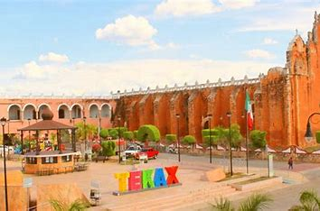
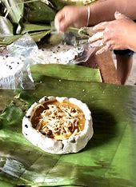
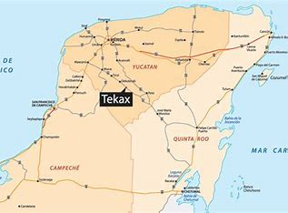
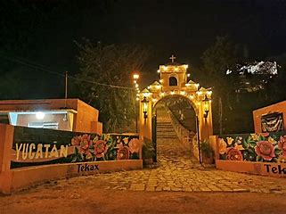
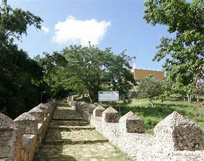
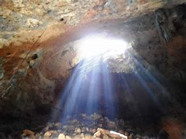

TEKAX
IR AL MENU

La region correspondiente al actual municipio dde tekax, se considera
ocupada desde la epoca precolombina cuando inicio el desarrollo de la
cultura maya, en la zona pucc, asi lo atestiguan los sitios
arqueologicos de Chacmultum, se empiezan a practicar a los 30 años del
siglo xx y permite recoger mucha informacion para conocer el patrimonio
cultural y nacional en poco tiempo y es un conjunto de cambios
orientados a la investigacion y documentacion y labores de
consolidacion.
En la epoca de prehispanica pertenecio al cacicazgo de Tuituxiu en
1558, Tekax recivio la visita del comisario general de nueva España.
TIPOS DE COMIDA

LA GASTRONOMIA:
Los alimentos del pueblo magico de tekax se preparan con masa de maiz
carne de puerco, pollo y venado acompañados con salsas picantes a base
de chiles habaneroy max. Los principales son frijol con puerco, puchero
de gallina , salbutepanuchos.
DULCES:
Se elaboran con yuca de miel, calabaza melada, camote con coco etc.
BEBIDAS:
Las bebidas tradicionales son el xtabentun, balche, bebida de anis,
pozole con coco, horchata, atole de maiz nuevo, y refrescos de frutas
de la region.
CULTURA:
Entre los edificios coloniales o de estilo colonial, destacan a la
parroquia de San Juan Bautista (siglo xvll) la casa de los tres pisos,
la ermita de San Diego y la capilla del padre eterno.
FIESTAS POPULARES:
Del 18 al 22 de abril se festeja la fiesta de la prrimavera;del
8 de mayo al 1 de junio se festeja a San Bartolome y se hacen rosarios,
misas y procesionesen la localidad de Pencuyut. En el mes de junio se
festeja el patrono de San Juan Bautista. del 8 al 13 de noviembre y de
la virgen de guadalupe del 4 al 15 de diciembre.
CLIMA:
El clima es calido, subhumedo, con temporada de lluvias en los
meses de mayo - julio, la temperatura media anual es de 26 3 grados
centigrados. La precipitacion pluvial es de 469 mn. Los vientos
dominales son del sureste hacia el noreste, pero wn invierno durante
los frente frios el viento proviene de norte.
UBICACION:

SITIOS DE INTERES:

CAPILLA DEL PADRE ETERNO: Es una sublemacion del logro de tekax al
tener un templo de religion, es conjunto integrada antiguamente pero
muy bien cuidado de buen mantenimiento hacia ese lugar sagrado
ERMITA DEDICADA A SAN DIEGO EDIFICADA SOBRE UN CERRO:

Originalmente, era
un lugar de oracion y recogimiento que permitia a un traile o ermitaño
podder que cultiva la paz su propia vocacion particular. Esta
relacionado con el concepto de eremitorio, que es un lugar donde
existen uno o mas frailes o monjes eremitas, al estilo de los padres
desierta o de yermos o del padres de la Tabaida del cristianismo.
Posteriormente el significado se extendio para incluir capillas,
iglesias u otros santuarios. Generalmente pequeños, situados comun por
el campo y que no tiene culto permanente.
En ocaciones una ermita puede ser practicamente humilladero cubierto de
planta rectangular, con paredes de sus tres lados y reja en el otro
lado. Es tradicional en muchos ermitas cdelebraer misa en mismo de
festividad del santo bajo cuya advocacion esten, pudiendo celebrarse
ademas romerias y festejos en su entorno.
Hay santuarios que originalmente se construyeron en depoblados y
postriormente han quedado rodeados de otros edificios. Pero conservan
la denominacion de la ermita.
FORMACION DE YACIMIENTOS

Los yacimientos se forman por proocesos de abandono o enterramineto una
veces y otros que se arrasa para continuar viviendo encima, hay
yaciminetos de varias ocupaciones. Intervienen porcesos fisicos,
biologicos y culturales.
Ven y visita este hermoso lugar de Tecax la verdad nunca te arepentiras de este hermoso lugar.
¡gracias!